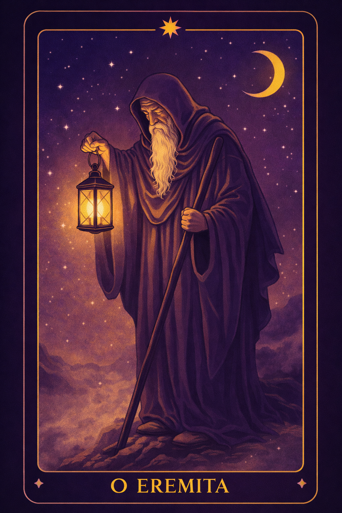
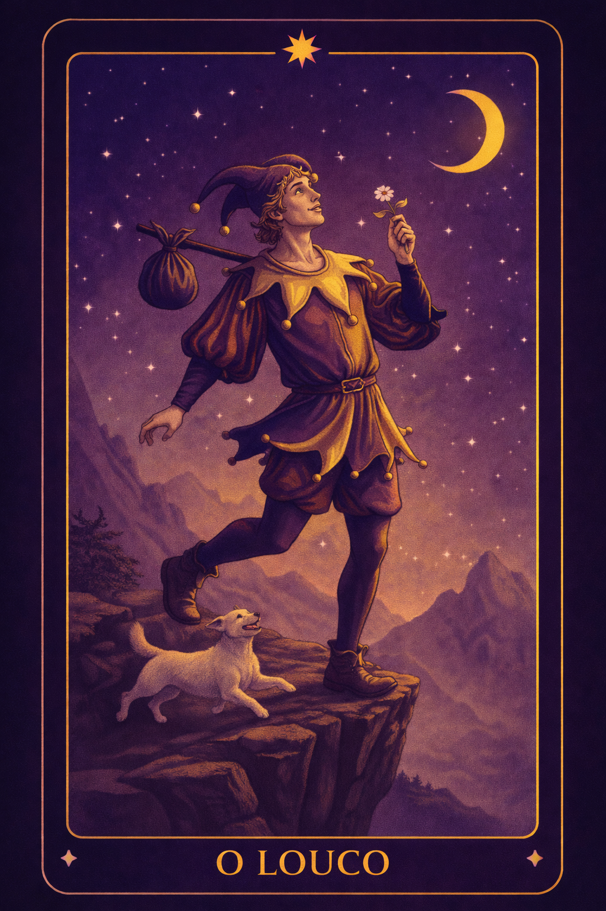
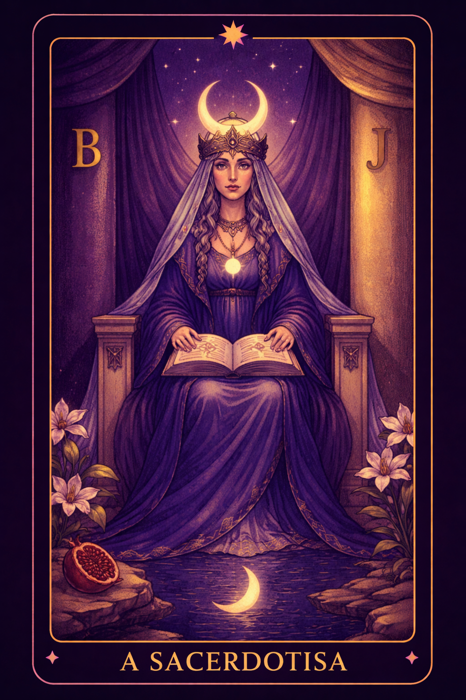

Mensagem do Dia
O EremitaA resposta que procuras não está fora. Silencia o mundo e escuta a tua própria sabedoria. A tua luz interior sabe mostrar o caminho.

Mensagem da Semana
O LoucoUm novo caminho chama por ti. Confia no primeiro passo, mesmo que ainda não vejas todo o percurso. A vida recompensa quem tem coragem de começar.

Mensagem do Mês
A SacerdotisaNem tudo precisa ser revelado agora. Escuta a tua intuição e observa os sinais com calma. A verdade surge quando o silêncio é respeitado.